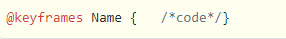

CSS transition có nhiệm vụ điều khiển tốc độ của hiệu ứng sau khi đã thay đổi các thuộc tính sẵn có trong CSS. Khi đó, mọi hoạt động có liên quan đến quá trình chuyển tiếp giữa các trạng thái thường được xem là chuyển tiếp tiềm ẩn. Bởi vì, những trạng thái nằm giữa các trạng thái bắt đầu và kết thúc đều đã được ngầm định bởi trình duyệt.
CSS transitions còn giúp cho bạn có thể quyết định xem thuộc tính nào có hiệu ứng và khi nào thì hiệu ứng sẽ được bắt đầu nhờ cách thiết lập thời gian trì hoãn và delay. Và các câu hỏi sẽ được đặt ra là: bao lâu thì quá trình chuyển đổi kết thúc, cách chuyển đổi diễn ra như thế nào, tuyến tính ra sao và khi nào cần bắt đầu,...
Có nhiệm vụ thực hiện chỉ định tên cho các thuộc tính CSS nhằm áp dụng các hiệu ứng. Khi các thuộc tính này đã được liệt kê thì mọi hiệu ứng đều sẽ nằm trong thời gian chuyển đổi. Mọi thay đổi của thuộc tính khác đều sẽ xảy ra và được xem như thường lệ.
Thuộc tính này giúp chỉ định thời gian mà các chuyển tiếp sẽ xảy ra. Bởi vậy, bạn có thể chỉ định trong một khoảng thời gian duy nhất khi cần áp dụng cho tất cả thuộc tính. Hoặc, những giá trị sẽ cho phép các thuộc tính thực hiện chuyển đổi dần theo khoảng thời gian khác nhau.
Hỗ trợ chỉ định cho một hàm để có thể định nghĩa cách cho các giá trị trung gian khác dành cho thuộc tính đã được tính toán ra sao. Timing functions sẽ giúp bạn có thể xác định được các giá trị trung gian của những chuyển đổi đã được tính toàn sẵn.
Nó giúp bạn xác định được một khoảng thời gian khi trì hoãn giữa thời gian của một thuộc tính và những lúc chuyển tiếp rồi thực sự bắt đầu nó.
Animation được hiểu là hiệu ứng chuyển động, sử dụng để tạo hiệu ứng di chuyển cho các phần tử và được ứng dụng khá nhiều trong các website hiện nay. Để tạo một chuyển động Animation, bạn cần phải có các keyframe. Mỗi keyframe sẽ được chạy ở một thời điểm xác định và trong keyframe đó nó quy định việc phần tử sẽ di chuyển ra sao.
Bên trong quy tắc này, bạn xác định các keyframe để quy định việc phần tử sẽ chuyển động ra sao tại mỗi thời điểm nhất định. Cú pháp của keyframe:
Thuộc tính animation-delay sử dụng để xác định khoảng thời gian trì hoãn giữa thời gian một thuộc tính thay đổi và lúc hiệu ứng animation thực sự bắt đầu.
Thuộc tính animation-iteration-count sử dụng để thiết lập số lần thực hiện một animation. Giá trị thường là:
Thuộc tính animation-direction sử dụng để xác định chiều chạy của animation. Các giá trị mà animation-direction có thể nhận là:
Thuộc tính animation-timing-function dùng để xác định tốc độ thay đổi khi hiệu ứng di chuyển. Các giá trị có sẵn như sau:
Animation CSS không gây ảnh hưởng đến phần tử trước khi chạy keyframe đầu tiên và sau khi keyframe cuối cùng kết thúc. Và thuộc tính animation-fill-mode sử dụng để thay đổi trạng thái của phần tử trước khi bắt đầu sau khi kết thúc Animation.
Các giá trị có sẵn như sau:
2D Transform CSS là những thuộc tính được dùng để xử lý các hiệu ứng di chuyển 2D của các phần tử trên website.